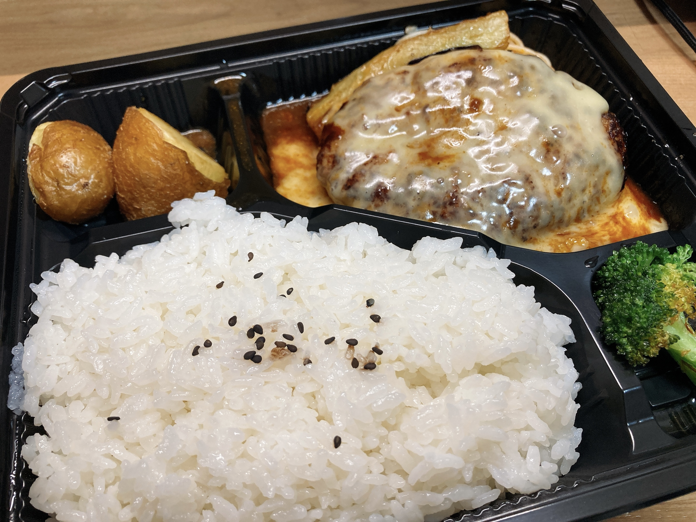

文字は書くに限る
ちょっとつらいことがありまして。一歩も動けない何も考えられないみたいな状況に陥りかけてやばかったんですが、なんとかうーばーでおおお1美味しい肉こと山本のハンバーグ弁当を召喚しました。

こってりチーズ。相変わらず感動的な美味さのブロッコリー。たった数百円追加で払うだけで家から一歩も出ずこの美味しいハンバーグにありつけるなんて。食べながら感動で涙が出てきました。べこべこに病んでもめったに食欲が消えないのは不幸中の幸い。
なんとかキーボードには触れられそうだったので、溜めていた日記をごりごり更新しているうちにちょっと落ち着いてきました。やっぱり文字は書くに限るといいますか、慣れた表現法に頼るのが一番心穏やかになれますね。
ついったでもちまちま言ったりしているのですが、話すことがあまり得意じゃありません。ゆっくり一人で画面やら紙やらと向き合って文字を起こしていくのと違って、話すのはその場その場で内容を生成しつつ声帯を震わせないといけなくて、このマルチタスクがとてもしんどい。最近ある事情で英会話を求められる場面が増えて、その度にげろげろに病んでいるという。母語でもできないこと外国語でできるわけなくないですか？この「母語でもできない（話せない）」が先方に上手く共感してもらえなくてちと厳しいですね。読み書きはある程度できてしまうのがなおさら悲惨というかなんというか。
このご時世で音声通話の頻度が増えて慣れてしまったので、あまり🍳が喋るのが苦手という実感が湧かない人が多いかも？ 何人か本当にダメな状況に遭遇した人がいるはずですが、結構レアなので拝めると運がいいですよ。先回って解説しておくと、内容生成が追いつかなくなった時にフリーズしてそのまま二度と口を開けなくなります。喋り相手からすると、質問をした相手が黙りきって一言も発してくれなくなるわけですね。本当はここであーとかうーんとか、なにかちょっとでも声を出せるといいのですが、これがどうしてか一切できないのです。これって皆同じ感覚が存在するんでしょうか？しないのであれば胸張って「喋るの苦手です」と言い張っていい案件な気がするのですが……。
そういえば大昔、英語の授業で1対1の面接をしたことがあって、完全に話せなくなってしまったというトラウマ案件がありますね。つらいこと思い出してしまった。もし今後この日記を読んだ人間でこのかわいそうな🍳に遭遇した人がいたら、まだ筆談なら意思疎通ができる可能性が残されているので、キーボードなりスマホなりペンなり手渡していただけるとたすかります。もしくは、指や首は動かせるのでジェスチャーで対応可能な質問を振っていただければ返答できると思います。手話とか覚えたほうがいいのかもしれない。ちなみに音声での返答を急かされると詰みます。
本当はこんな悪い癖ないほうがいいんですけどね。20年以上生きて改善しないので望みが薄い。一体何が原因なのやら。